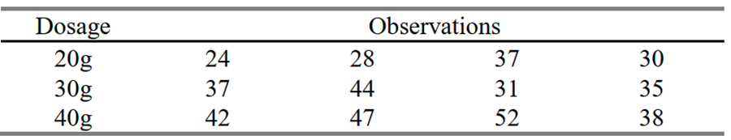

A pharmaceutical manufacturer wants to investigate the bioactivity of a new drug. A completely randomized single-factor experiment was conducted with three dosage levels, and the following results were obtained.

Complete the ANOVA table:
nt <-3*4a <-3df_tr <- ( a -1 )df_tr
[1] 2
df_e <- nt - adf_e
[1] 9
SStr <-450.7SST <-783.9SSe <- SST - SStrSSe
[1] 333.2
MStr <- SStr / df_trMStr
[1] 225.35
MSe <- SSe / df_eMSe
[1] 37.02222
F_v <- MStr / MSeF_v
[1] 6.086885
P_v <-pf(F_v, df_tr, df_e, lower.tail = F)P_v
[1] 0.02128136
df
SS
MS
F-Value
P-Value
Bet_ Dossage
2
450.7
225.35
6.09
0.021
Error
9
333.2
37.02
Total
11
783.9
a.
Is there evidence to indicate that dosage level affects bioactivity?
R/
Assuming an \(\alpha = 0.05\), There is strong evidence to conclude that the at least one of the mean bioactivities is different from the others (P-value < \(\alpha\)).
b.
Compute a 95 percent interval estimate of the mean of dosage level is 30g.
Use Tukey’s HSD to compare pairs of treatment means.
R/
When \(| x_a - x_b | > Tukey's\ HSD\) we can conclude that there is a difference mean of \(a\) is different of the mean of \(b\)
# Tukey's HSD for all the comparisonsT_HSD <- Q * SET_HSD
[1] 12.01248
abs(x1 - x2) > T_HSD #Comparison for dosage 20g to dosage 30g
[1] FALSE
abs(x1 - x3) > T_HSD #Comparison for dosage 20g to dosage 40g
[1] TRUE
abs(x2 - x3) > T_HSD #Comparison for dosage 30g to dosage 40g
[1] FALSE
For these comparisons, the only comparison in which the mean bioactivity of the new drug is significantly different, is when it is compared 20g and 40 g of dosage.
Problem 2
The tensile strength of Portland cement is being studied. Four different mixing techniques can be used economically. A completely randomized experiment was conducted, and the following data were collected.
As our P-value obtained is less than our \(\alpha = 0.05\), we reject the null hypothesis, and we have enough evidence to conclude that at least one of the mean tensile strengths is different from the others when a different mixing technique is applied.
b.
Find a 95 percent confidence interval on the mean tensile strength of the Portland cement produced by mixing technique 3.
R/
t_star <-qt(.975, n3-1)t_star
[1] 3.182446
SE3 <- s3 /sqrt(n3)SE3
[1] 28.325
Up3 <- y3 + t_star * SE3Up3
[1] 3023.893
Lo3 <- y3 - t_star * SE3Lo3
[1] 2843.607
We are 95% confident that the true mean tensile strength of the Portland cement produced by mixing technique 3 lies between (2843.61, 3023.89) \(lb/in^2\).
c.
Find a 95 percent confidence interval on the difference in means for techniques 1 and 3 & 3 and 4.
PE31 <- y3 - y1PE31
[1] -37.25
PE34 <- y3 - y4PE34
[1] 267.5
df31 <- n1 + n3 -2df31
[1] 6
df34 <- n3 + n4 -2df34
[1] 6
SE <-sqrt( 2* MSE /4)SE
[1] 80.08027
t_star <-qt(0.975, df34, lower.tail = T)t_star
[1] 2.446912
Up31 <- PE31 + (SE * t_star)Up31
[1] 158.6994
Lo31 <- PE31 - (SE * t_star)Lo31
[1] -233.1994
Up34 <- PE34 + (SE * t_star)Up34
[1] 463.4494
Lo34 <- PE34 - (SE * t_star)Lo34
[1] 71.55063
We are 95% confident that the true difference in mean tensile strength for mixing technique 3 and 1 is between (-233.2, 158.7) \(lb/in^2\). That is the tensile strength for mixing technique 3 is between 158.7 \(lb/in^2\) higher and 233.2 \(lb/in^2\) lower than mixing technique 1.
We are 95% confident that the true difference in mean tensile strength for mixing technique 3 and 4 is between (71.55, 463.45) \(lb/in^2\). That is the tensile strength for mixing technique 3 is between 71.55 \(lb/in^2\) and 463.45 \(lb/in^2\) higher than mixing technique 1.
d.
Compute simultaneous 95% CIs for the difference in means for techniques 1 and 3, based on Tukey’s, Bonferroni’s and Scheffe’s Methods: